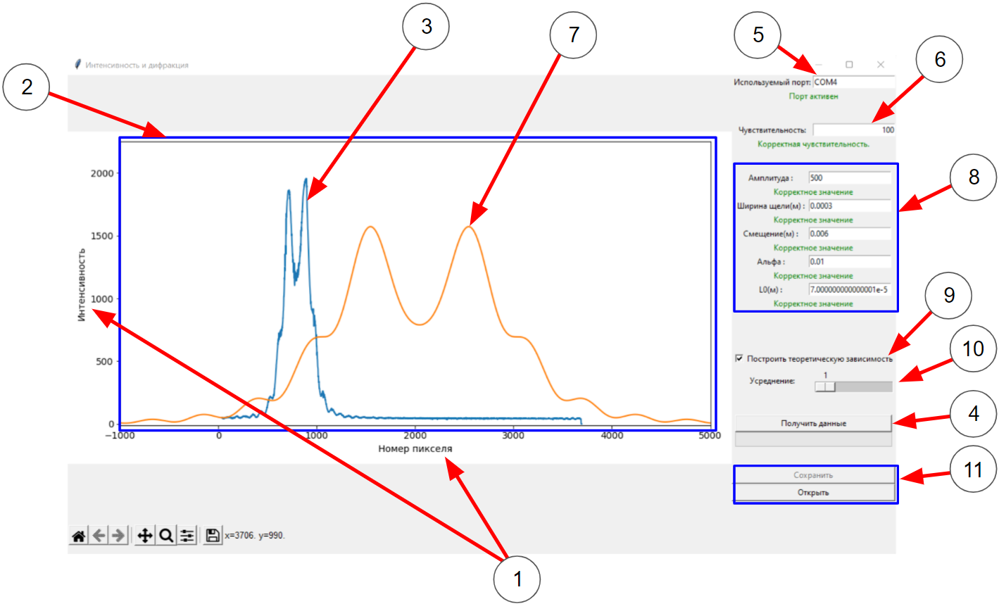
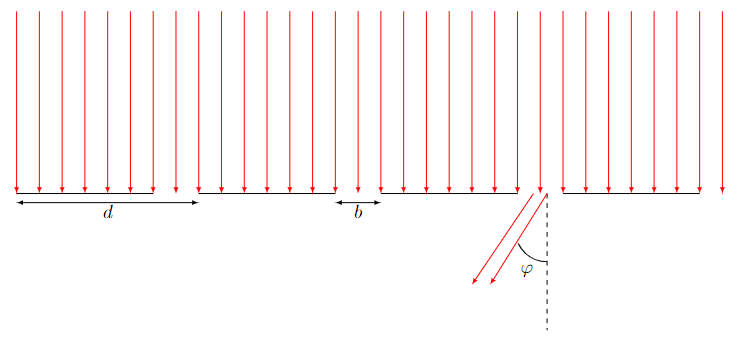
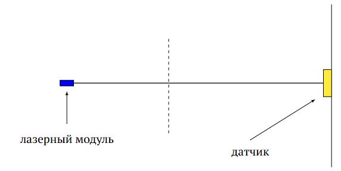
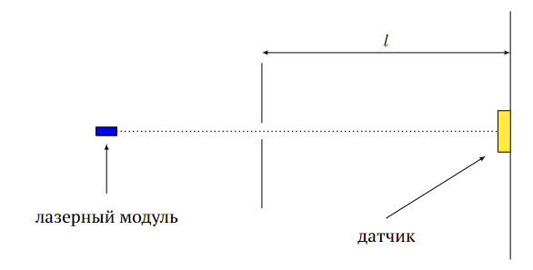
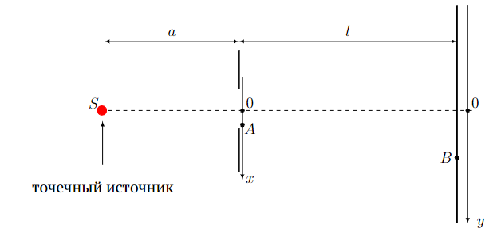
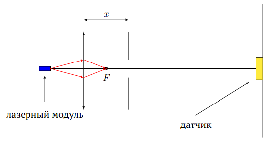

Fig. 1.
Y23 (2023) — English translation
There is no need to estimate errors in this problem! Equipment: Optical bench Movable stands (6 pcs.) Magnetic holders (3 pcs.) Platform for smooth horizontal movements Diffraction grating holder Laser holder Steel screen Lens Laser module (laser wavelength $630~\text{нм}$). Do not apply voltage more than 5 V to it! Slide with diffraction gratings, plastic holder with clips Power supply CCD array (linear array of photodiodes, photodiode size is 10 microns, they are located closely) Slot (blades fixed in the slide frame) Tape measure Wires for connecting the laser Laptop
There is no need to estimate errors in this problem!

Данная программа позволяет считывать интенсивность света, падающего на чувствительные элементы датчика (ПЗС-линейку), а также производить с полученными данными определённые действия. - Основные элементы программы: Основные оси Поле графика График интенсивности Кнопка сбора данных. Поле для определения используемого порта Чувствительность датчика Теоретическая зависимость Виджет для настройки параметров функции Кнопка, активирующая построение графика теоретической зависимости Полоса для усреднения Виджет построения графика Виджет сохранения и загрузки Полная интенсивность Алгоритм действий для начала работы с программой : подключите устройство для считывания к компьютеру через кабель. Выберите на панели «Используемый порт» (5) — COM3. Снизу под ней должна загореться зелёная надпись «Порт активен». Если этого не произошло, позовите наблюдателя и сообщите о проблеме. Считывание данных : Для считывания новых данных вам необходимо нажать на кнопку «Получить данные»(4). У вас есть возможность выбрать степень усреднения (10). Число, которое вы выбираете в этом виджете показывает сколько будет сделано измерений перед их усреднением. Усреднение позволяет избежать появление артефактов, а также шумов. Для того, что бы считывать сигналы с, значительно различающимися, интенсивностями вы можете изменять чувствительность (6). Вводимое число должно быть делителем числа 50000. Работа с графиком, Построение теоретической функции : На поле (2) отображается два графика: «График экспериментальной зависимости». Этот график (3) показывает интенсивность света, падающего на пиксели матрицы. «Теоретический график». Этот график изображает теоретическую зависимость. С помощью виджета (8) можно настроить все параметры данной зависимости. Его нужно использовать в части C задачи, в ней содержится подробное описание теоретической зависимости. Сохранение и загрузка данных : Для того, что бы сохранить и загрузить, ранее сохранённые данные, вам необходимо использовать виджет (12). Сохранение происходит в файл с разрешением .dat. Артефакты : иногда на графиках можно увидеть вертикальные полосы. Так бывает когда ваш сигнал очень низкий. Это можно починить, включив усреднение по нескольким измерениям (10). При решении задачи вам потребуется сохранять файлы с полученными экспериментальными данными. Укажите в листах ответов в соответствующих пунктах названия файлов, которые являются ответами к ним. Все файлы должны быть сохранены в папке на рабочем столе с вашей фамилией в названии. Измерения оцениваются только при наличии файла, из которого получены данные.
- Основные элементы программы:
Алгоритм действий для начала работы с программой : подключите устройство для считывания к компьютеру через кабель. Выберите на панели «Используемый порт» (5) — COM3. Снизу под ней должна загореться зелёная надпись «Порт активен». Если этого не произошло, позовите наблюдателя и сообщите о проблеме.
Считывание данных : Для считывания новых данных вам необходимо нажать на кнопку «Получить данные»(4). У вас есть возможность выбрать степень усреднения (10). Число, которое вы выбираете в этом виджете показывает сколько будет сделано измерений перед их усреднением. Усреднение позволяет избежать появление артефактов, а также шумов. Для того, что бы считывать сигналы с, значительно различающимися, интенсивностями вы можете изменять чувствительность (6). Вводимое число должно быть делителем числа 50000.
Работа с графиком, Построение теоретической функции : На поле (2) отображается два графика:
Сохранение и загрузка данных : Для того, что бы сохранить и загрузить, ранее сохранённые данные, вам необходимо использовать виджет (12). Сохранение происходит в файл с разрешением .dat.
Артефакты : иногда на графиках можно увидеть вертикальные полосы. Так бывает когда ваш сигнал очень низкий. Это можно починить, включив усреднение по нескольким измерениям (10).
При решении задачи вам потребуется сохранять файлы с полученными экспериментальными данными. Укажите в листах ответов в соответствующих пунктах названия файлов, которые являются ответами к ним. Все файлы должны быть сохранены в папке на рабочем столе с вашей фамилией в названии. Измерения оцениваются только при наличии файла, из которого получены данные.
В этой задаче вам предлагается исследовать дифракцию на дифракционной решетке и на щели. Если дифракционную картину наблюдать непосредственно с помощью глаз, то можно заметить положения дифракционных максимумов и минимумов, однако полное распределение интенсивности остается неисследованным. С помощью предоставленного вам спектроскопического датчика вы сможете изучить распределение интенсивности дифракционной картины.

In this part of the problem, you are asked to study the diffraction pattern behind a diffraction grating, onto which laser radiation with wavelength $\lambda$ is incident normally. The diffraction grating is a periodic structure with a period $d$, each period is a slit of width $b$ and an opaque section.
In this part of the problem it will be necessary to study the diffraction pattern of the DG3 diffraction grating. Assemble the setup and obtain the diffraction pattern. Next, using a spectroscopic sensor and a program on a laptop, obtain the intensity distribution on the given grating.

When a parallel beam of rays falls on the slit, and the screen is far enough from the slit, Fraunhofer diffraction can be observed on the screen. We can consider that a laser beam is a parallel beam of rays. This part uses the following installation diagram. Light from the laser module falls on the slit; behind the slit at a distance $l$ there is a screen with a sensor that records the intensity distribution in the diffraction pattern. Make sure that the laser beam hits the center of the slit at a right angle.

In this part of the problem you will examine the diffraction pattern from slit diffraction. As a gap in your equipment, you have blades secured in a holder. Please indicate the number written on the holder body.
According to the Huygens-Fresnel principle, the intensity in the plane of the screen can be obtained as a result of the interference of secondary sources located in the plane of the slit. For simplicity, we will assume that the slit is illuminated uniformly and the radiation intensities from all parts of the slit are the same. We need to find the intensity at an arbitrary point $B$ of the detector plane with coordinate $y$. A point light source $S$ is located at a distance $a$ from the slit, opposite its center. Let us introduce the coordinate axis $x$ in the slit plane (the origin of coordinates is the center of the slit) and the coordinate axis $y$ in the plane of the detector (the origin of coordinates is opposite the center of the slit). Let us consider a secondary wave that is emitted by some point $A$ of the slit and hits the point $B$. Then the phase of the wave $\delta(x, y)$ arriving at point $B$ is determined by the path length $SAB$. The amplitude of the wave at point $B$ is equal to the integral $$ f = \int dx e^{i \delta(x, y)}, $$ and the intensity is proportional to the squared modulus of the resulting value.

Under the assumptions made, the intensity distribution on the screen is expressed through the so-called Fresnel integrals. The final expression is quite cumbersome, but the program provided to you can plot the theoretical relationship according to the given parameters. To construct a theoretical graph, you need to specify 5 parameters: amplitude $A$, which specifies the overall scale of the graph along the vertical axis (for typical measurements its characteristic order is $100-1000$); slot width $d$ (in meters); displacement – the total horizontal displacement of the graph $y_0$ (in meters); coefficient $\alpha$; length $L_0$.
Under the assumptions made, the intensity distribution on the screen is expressed through the so-called Fresnel integrals. The final expression is quite cumbersome, but the program provided to you can plot the theoretical relationship according to the given parameters. To build a theoretical graph, you need to specify 5 parameters:

When the source is far away from the slit, a Fraunhofer diffraction pattern is observed. If you move the source closer to the slit, at some point a minimum will appear in the center of the central maximum. With further approximation, it is possible to obtain pictures with a large number of minima.
Assemble the installation shown in the figure. The laser beam hits the lens and forms an image at the focal plane of the lens. This image serves as the source from which diffraction at the slit is observed. Thus, the distance $a$ means the distance from the lens focus to the slit plane.
Record the geometric parameters of the setup under which these images were obtained. Save the file with the measured data in a folder with your last name. Provide file names on your answer sheets. Name the files “C4.1”, “C4.2” and “C4.3” respectively.
Source: https://pho.rs/p/3496